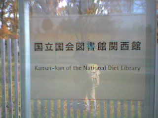
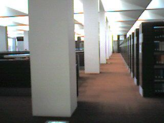
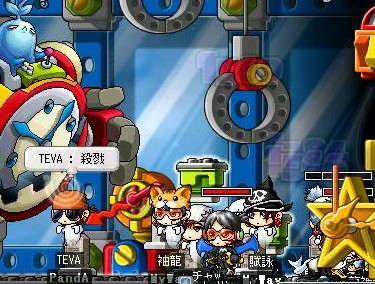

ただいまでございます。
昨日よりわたくしTEVAは、学校の近くの友達の家に泊まりこみで卒論的な事をやってました。
で、寝てません。
現時刻午前2時。
今この瞬間までで、計26時間起きっぱなしです。
だから俺はもうだめだ。
おやすみ、、、
と こ ろ が、そうもいかない状況。
今日取ってきたアンケートの集計をして、明日発表するなんやかんやをしなければいかんのです。
眠たいです。
おまけに先生からはさらにボロカスに駄目だしを喰らっちゃって。
最近のお前からは生気を感じない とまで言わる始末です。
アァアー(´,△`)
でもね、アンケート回収してたら右上にこんなメモが、、、

俺の友達が書いてくれてました；；
あったかい。
なんて嬉しい一言。゜゜(´□｀｡)°゜。
うぉおおおお！やーるぞーぉおおお！！
ｵﾜﾗﾅｲ
シャオさん、月虹姫からの書き込みで、お二人のお勧め本を教えて頂きました。
なので、さっそく行ってきました市立図書館(早
自分の興味のある事なら異様に行動が早いです、どうもTEVAです。
今回はかなり近いとこですので、TEVAの家からバイクで15分。
渋滞渋滞！でも俺はバイクだからすり抜けすり抜け！
やっヴぇ、快感。
「はーっはっはっは！貴様ら車組にはこの道は辛いだろうなぁ！だが俺には関係ねーぇえ！(ﾟ,▽ﾟ)」
とか馬鹿な事口走りながら考えながら13時到着。
うぇうぇ
ここは18歳制限とか無いですからね、やっぱりっつーか当然っつーか。奇声発する餓鬼とか暴れる餓鬼とか「シーッシー！」とか言うママさんとかがいて大変騒がしかったですヽ(´ー`)ﾉ
しかしここでいちいちムカついててはアダルティーな態度としてはよろしくないですね。
だから大人としてさらっとスルーしたり、怒らないママの代わりに「ゴラ。」とか言っておきました(ぇ
置いといて。
東野圭吾氏の本をさっそく読んできました。
「毒笑小説」は残念ながら貸し出し中だったので、代わりに「怪笑小説」の方を。
正直最初は「なんだこれ？」って書き出しだったんですが、読み進めていくにつれて段々とヒートアップしていく話の流れが非常に面白かったです。
かなりフランクな内容だったのですが、他の著書もこんな感じなのかな。
色々読んでみたいな。
これはエッセイだったのでサクサク読めたんですが、4つほどお話を読み進んだところで時間切れ。
続きを借りて帰りたかったんだけど、現在のあなたは既に規定冊数借りているのでこれ以上は貸せないと。
うぅむ、残念。
今度しっかりと腰を据えて読まなければ(ﾉ_`)
あーそっか。17時で閉館だったね。
健全だなぉぃ
なんかムラムラするぜ(どんなだ
本が大好きです。
暇さえあればいつでも読んでます。
電車の中とか本が無いと発狂してしまうかもしれません。
クケー!って。
迷惑になるのでしませんがね(´σд`) 誰もいないとするのか
どの作家が好きなのかといえば、浅田次郎を真っ先に挙げます。
これまじでお勧め。どの本を読んでも面白いです。ってゆーか勉強になります。
痛快な物語で読みながら興奮するとか滅多に無いですよね？でもこの人の本にはあります(･∀･)
「そうだ、そういう事だったのよ！今まで文章で現せなかった事はこういうことなのよ！」とか、
なんて切ない物語なのよ…。とか、
うおー読み終わるのがもったいねー！とか。
そんな中で俺の一番のお勧めの本は、「天切り松闇がたり」
これはやばいです、おもしろすぎます。
時は昭和、江戸の夜盗一味の生き様がありありと書かれていてかっこよすぎます。
「勇気凛凛ルリの色」も良いですよ。
あと「活動写真の女」、「沙高樓綺譚」、「歩兵の本領」、それと…
…
ってゆーかこんなのは実際に読んでみないとわからんものなのでやめますねヽ(´Δ`)ﾉ
あと好きな作家は曽野綾子と池波正太郎。
…俺の趣味はだいぶ偏ってるようですな(･∀･;)
まあいいや
ｵﾜﾘ
本日、改めて国立図書館 関西館に行ってきました。
場所は京都府相良郡精華町。
TEVAの家から2時間ですorz
これがバス停を降りてから正門に行くまでの道のり。 (先が見えねー
で、正面。 (モロ逆光ですねー('A`)
じゃじゃん。 (あ、ちょっと俺が写ってますねｗ
…流石国立っつーかなんつーか。敷地がめちゃくちゃ広いです。
正門から入り口まで150Mぐらい、ドアをくぐるとさらに100Mぐらいゆるやかな階段を降りて、利用者登録。
やっとたどり着いたそこは、、、
書架書架書架書架書架、机机机机机、パソコンパソコンパソコンパソコンパソコン、、、そして耳が痛い程の静寂、、、。
『聖域や、、、』と、本気でそう思いました。スピーカー押さえて撮っちゃいましたよｗ
ガキが存在していい雰囲気じゃねーなこりゃ。
ってゆーか18歳未満は利用禁止なのです。ウホ、大人の特権(ﾟ▽、ﾟ)
エロビデオが見られる年齢ってだけじゃなかったのねー(何
で、だ。お目当ての本はどこかいな、とパソコンで検索をかけてみる事にしました。
[利用する為には登録カードをセットしてください。]
わぁぉ、超クーール(´,∀`)(またか
…まあお目当ての先生に教えていただいた研究者の本は見つけたんですけど、、、
なんと1965年製.そりゃあどこにも無いわなぁ。ここでさえもオープンじゃない書庫に収められていたぐらいやもんね。
ﾋｪ
まーこの日は大変有意義な勉強時間を得たわけですがっがが、ここで問題発生。
書斎が欲しくなってしまった。
壁一面本棚になっててー、こっちの棚は漫画こっちの棚は活字の本、とかいって買ってきた本はいくらでも収めてしまえるスペースがあってーこの机は勉強したり物書いたりする時の机でそっちの机はパソコンとかをやるところ。オフィスチェアーとかでゴロゴローってあっちこっちに移動しながら本読んだりパソコンいじったりとかそんな一日を過ごしたりなんかしたりして実はこっそり音楽が流れててその音楽は俺の好きなモーツァルトだったりフィリッパジョルダーノだったりビートマニアのサントラだったりDir en greyだったりジャミロクワイだったりで興奮するやら落ち着くやら壊れかけるやらでもーそこにいればなんでも出来ちゃうスペースになっちゃっててあーもうあｄふぉあいｄｓｊｆ！！
うわあああやべーぇ、欲しいーー
あばばば
ｵﾜｼﾞ
今日は休館日でした Σ(;･`д･)y-~~
悔しかったので夜の8時まで寝てやりました (´σд`)
完
明日(今日)は一回は行って見たかった国立図書館とやらに行ってきます。
国立図書館ってのはこないだテレビで見て知った存在なんですが、東京にしか無いと思ってたんですね。
だけど今日(昨日)先生の所に行って卒論の打ち合わせをしていた時に、
「欲しい本があるなら行ってみろ。」と薦められたわけです。
木津ってとこにあるらしいんですがまだ調べてません。あははは(´∀`)
活字に飢えてる俺としては超楽しみです。
暴れるガキとか奇声を発するガキがいないといいなぁ(´･ω･`)
ｵﾜﾙ
るっしあはぷちょさんだったのね(ﾉ▽`)
ロロのページ見ててわかったｗ
いや、ほんとですって。まじでこの環境でいじってるんですよ？
必要最低限、なのになんでも出来ちゃう・呼び出しやすい。
わぁお超クーール(´,∀`)(じゃあその壁紙はなんだ
デスクトップのショートカットとスタートメニューの内容がかぶっているのはつっこまない方針でよろしく。
Homeから辿るプログラムリンクが使いやすいんですよーだ
Cygwinをインストールしといて、環境変数をいじればsortとかgrepとかがコマンドプロンプトから実行出来てすごく便利なのです。
Cコンパイラも入ってるからBorlandへの登録も不要で、"Hello,World!"も簡単にコンパイル出来ますｗ
もう登録しちゃってるけどね。
行ってきましたメイポッっぽヽ(ﾟ∀｡)ﾉ もー滅茶苦茶遊んできましたですよ。…明け方6時まで。
今回はSSが多いので重くなりすぎないようにページを前半後半に分けました。
生意気にも日々書いててサイズも大きくなってきた事だしね。
それではレポートいきまーす
夕方5時ごろIN。プレイ開始。
たった一週間やってないだけなのに随分久しぶりな感じですね。
さちょから火ブルの首輪を集めようとのお誘い。地獄温泉へと向かいました。
しかし開始2分後、さちょが飯落ち('A`)ありえん。
その後すぐに十二時さんが来てくれたのですが、ここは足場が悪すぎでやってらんないので親分にでも行くかー、って事で裏通りへ。
レベル89のTEVAはレベル95の親分からはぎりぎり吸えなく、一発だけ当てて十二時さんが片付ける！
という計画でしたが…2秒後即死。 ＿|￣|○
その後、夜のプラさんパーティに向かうにあたってレベル上げとこうかなーって思い、手下Dに行きました。
すごいね、メイポ。また新しい出会いがあったですよ！(*´∀`)
狩場の空きをみつけてしばらく狩ってると、向こう側からゾロゾロと全ての敵を引き連れて誰かやってきました。
彼の名は 強烈な印象を受けたよｗ
強烈な印象を受けたよｗ
正直言うと彼はスナ付近のお友達ってぐらいしか知らなかったんですが…＾＾；るっしあの方は俺の事知っていてくれたらしくて…
「あ、TEVAさんだ。」って話しかけてくれました(´▽`)ﾓｴ(何
で、その後トモロク結んじゃいました(･∀･)
やべーって、いまだに新しい出会いがあるってのは幸せすぎ。
すっかりその存在を忘れてたんですが、丁度その時間は噂の4倍タイム！
…まー俺は2倍ですがね(´σд`)しっかり2倍のうまみを体験してきましたですよ。
現在の経験値は60%。さーどーするか、、、とか考えてたらゼロから武器庫のお誘いが。
省略(何


で、えーっと
その
なんだっけ
そうそう、前回のプラージュさんの画像は間違っておりました。こっちの海パンさんが正解でした。
訂正と共に深くお詫びいたします。(´σд`)
それではここからがメイン、「年始までさばばプラージュさん、貴方をダシに遊ぶぞ肉欲フェスティバル」の開始。(タイトル)
まずはビシャスプラント。PandAとMyWayのメンバー集合完了！
いくぞーみんな！！レディ、、、
GO!!
 チーン
はい、瞬殺でしたヽ(´ρ`)ﾉアァアー
なーに、あと一回出来るもんねー、リベンジいっくぞー！
とりゃ！
…
あれ？
皆殺しパート2。ヽ(ﾟ∀｡)ﾉｱﾋｬﾋｬﾋｬ
結局生き残ったのは時貞とカムイさんだけ。主賓であるプラージュさんは左端の方で死んでいたそうです。
あっはっはっは
＿|￣|○
で、次はジャクムへ。
ジャクムの門へ全員集まって、みんな腫れ物を触るかのごとくゆっくりとゲートをくぐり、無事に全員に入ることが出来ました。
主賓であるプラさんが生贄に火の目を置き、、、
おりゃあああ！！
プラージュ様がログインしました。
ALL： |li＿|￣|○il|
結局プラさん本人がほとんど参加できなかったってゆーね、うん。
まあいいわい。楽しかったです。(強制まとめ
みなさんお疲れ様でしたー(´∀`)
またやりまっしょいｂ
このあと、経験値とかどーでもいいツワモノのみがボディーガードへ特攻されました。当然プラさんも含めてねｂ
お前達勇者の事は忘れないよ、、、(つまり全滅)
っと、まあレポートは以上です。SSとか貼るの久しぶりだなーとか思いながら編集しとりました。
文章に頼らないぶん、なんかチグハグな感じですがまあ気にしないでください。
どうでもいい事ならなんぼでも書けますが、ちょっとまじめな文章とかになると途端に書けなくなっちゃう俺の事ですので('A`)
許してくだしゃ。うぇうぇ
それではプラージュさん、気合と共に超充実した日々を送ってくださいなｂ
俺たちはいつでも草葉の蔭から応援してまっせ(何
それでは今日はこの辺で。ヽ(´ー`)ﾉバーイ
…
いけね、忘れるところだった。
今回もっとも頑張ってくれたのはこの二人。
MVP。ありがとねー(*ﾉ∀`)
えっと、、、その、、、メイポが俺を誘惑するんです。
さちょ曰く さんが諸事情により結構長い間メイポをお休みするらしく、19日土曜日にお見送り会が開催されるらしいのですがっがが。
さんが諸事情により結構長い間メイポをお休みするらしく、19日土曜日にお見送り会が開催されるらしいのですがっがが。
俺も参加したいぞ。お見送りたいぞ。そしてそれに託けて遊びたいぞ。
INしちゃおうかな、、、。
しちゃっていいよね、、、？
うん、INする！(ﾟﾛﾟ)
INしちゃうぞーヽ(ﾟ∀｡)ﾉｱﾋｬﾋｬﾋｬ
…
甘い誘惑には勝てない駄目な奴、それが俺です(;´д`)>
だってだって、こんな人が待ってるんだぜ？行くしかないでしょ！！１？ヽ(ﾟ∀｡)ﾉ(関係無いと思われる[天の声]

太陽より月のほうが好きです、どうもTEVAです。
昨日は卒論の経過発表だったのでまた無駄に徹夜して完成させました。
っつーかいまだにテーマが絞りきれてないとか、、、やばすぎ。
先生にぼろくそに絞られてもうカスも出ねーよ ○|￣|＿
うーむ、、、以前のテーマでいけると思ったんだけどなぁ(-"-；
どんなことでも簡単にはいかないね。
昨夜は満月でしたね。
夕方5時ごろ、ぺったんこに凹んだ状態での帰宅中、ふと電車の窓から見えた月がでけーのなんのって。
黄色が強くてクレーターとかもくっきり。そしてすげー地球に近い感じのするでかさ。
これまた、ゾッとしたね。
あんな月を見たら、そりゃ魔力とかの存在でも信じたくもなるわ。昔の人はうまいこと言うね。
飯食って本読んで。
タバコでも吸おうかと思ってベランダに出たら、なんかめちゃくちゃ明るいんです。
本当に本が読めるぐらい明るいの。
びっくりして空を見上げたら、今度の月はうってかわって真っっ白な月。
気温が低くて空気も澄んでて、、、大気中に邪魔するものは何も無いって感じかな。
すげーの。本当にすげーの。
月が発する光が全部届いている感じで。
「神々しいってこういう事を言うんだー、、、」
っと、TEVAは馬鹿面していつまでも見上げていましたとさｗ
ﾍｯｸｼ
#apt-get install 気合
This program depend on me, and need the "Enough time"
…install Error.
#apt-get install "Enough time"
Sorry, can't find.
Try again, please.
…install Error.
＿|￣|○


{kind=link}